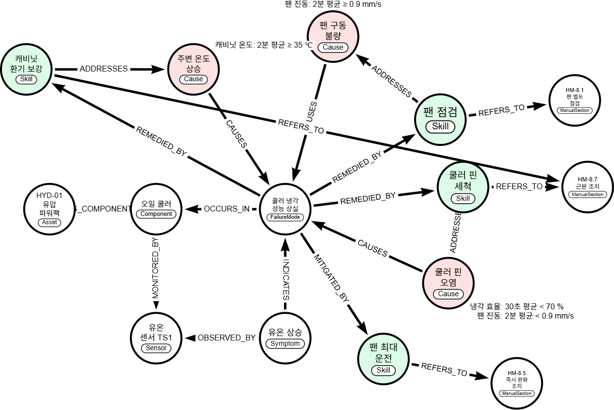

교재의 지식 그래프 지도(설비 · 구성 요소 · 센서 · 증상 · 고장 유형 · 원인 · 조치 방법 · 매뉴얼 절)를 오일 쿨러 사례로 arrows.app에 직접 그립니다. 핀 오염 가지를 그린 뒤 팬 구동 불량 가지를 더해 증거와 조치를 비교하고, 저장한 데이터를 다시 열어 세 번째 원인(주변 온도 상승)을 이어 그립니다. 종류별로 색을 칠하고 Cypher 명령으로 내보내 봅니다.

왼쪽은 강사가 하는 말, 오른쪽은 그때 하는 조작입니다.
| 이번 실습에서는 교재에서 본 지식 그래프 지도를 직접 그려 볼게요. 설비와 센서, 증상과 고장, 원인과 조치까지 쿨러 사례로 이어 보겠습니다. | — |
| 검색 결과에서 Arrows.app을 눌러 들어갈게요. | 검색 결과의 Arrows.app 링크 클릭 → arrows.app 열림 확인 |
| Arrows는 원과 화살표로 관계를 그리는 웹 도구예요. 왼쪽 넓은 곳이 그림 영역이고, 오른쪽은 선택한 대상의 내용을 바꾸는 패널입니다. | 그림 영역 가리키기 → 오른쪽 패널 가리키기 |
| 처음 기본 원은 긴 이름을 넣기에 조금 작아요. 오른쪽 STYLE에서 Customize를 누를게요. | STYLE의 Customize 클릭 |
| Nodes 아래 radius가 원의 크기예요. 50을 70으로 바꾸고 Tab 키로 확정하겠습니다. | radius 입력칸 클릭 → Ctrl+A(칸 전체 선택) → `70` 입력 → Tab 키 |
| 이제 위쪽의 파란 Add Node를 눌러 첫 원을 만들게요. | Add Node 클릭 |
| 원이 생기고 오른쪽에 내용 칸이 열렸어요. Caption은 원 안에 보일 이름입니다. 이 칸을 누르고 HYD-01 유압 파워팩이라고 적을게요. | Caption 입력칸 클릭 → `HYD-01 유압 파워팩` 입력 |
| Label은 이 대상이 어떤 종류인지 적는 곳이에요. Label 옆 더하기를 누를게요. | Label 옆 + 클릭 |
| 새로 생긴 칸을 누르고, 설비를 뜻하는 Asset을 적은 뒤 Tab 키로 확정하겠습니다. | 새 Label 입력칸 클릭 → `Asset` 입력 → Tab 키 |
| 원 안에 이름과 종류가 함께 보이죠. 이렇게 원 하나에 대상 하나를 적습니다. | — |
| 다음은 이 설비의 구성 요소인 오일 쿨러예요. 이번에는 원에서 바로 이어서 만들어 볼게요. 선택한 원의 테두리 바로 바깥을 잡고 빈 곳으로 끌어 놓으면 화살표와 새 원이 함께 생깁니다. | ‘HYD-01 유압 파워팩’ 원 테두리 바로 바깥을 잡아 빈 곳으로 끌기 → 새 원과 화살표 생성 |
| 새 원이 선택된 상태예요. Caption에 오일 쿨러, Label에는 구성 요소를 뜻하는 Component를 적을게요. | Caption 입력칸 클릭 → `오일 쿨러` 입력 → Label 옆 + 클릭 → 새 Label 입력칸 클릭 → `Component` 입력 → Tab 키 |
| 이제 화살표에 이름을 붙일게요. 두 원 사이의 화살표를 누르면 오른쪽에 Type 칸이 나와요. | ‘HYD-01 유압 파워팩’–‘오일 쿨러’ 사이 화살표 클릭(관계 선택) |
| Type 칸을 누르고, 구성 요소로 가진다는 뜻의 HAS_COMPONENT를 적을게요. | Type 입력칸 클릭 → `HAS_COMPONENT` 입력 |
| 설비가 오일 쿨러를 구성 요소로 가진다. 이렇게 출발에서 도착 쪽으로 읽으면 됩니다. | ‘HYD-01 유압 파워팩’ 원 가리키기 → ‘오일 쿨러’ 원 가리키기 |
| 오일 쿨러에서 같은 방법으로 왼쪽 아래에 원을 하나 더 만들게요. | ‘오일 쿨러’ 원 테두리 바로 바깥을 잡아 빈 곳으로 끌기 → 새 원과 화살표 생성 |
| Caption은 유온 센서 TS1, Label은 센서를 뜻하는 Sensor라고 적겠습니다. | Caption 입력칸 클릭 → `유온 센서 TS1` 입력 → Label 옆 + 클릭 → 새 Label 입력칸 클릭 → `Sensor` 입력 → Tab 키 |
| 화살표를 누르고 Type에 계측된다는 뜻의 MONITORED_BY를 적을게요. 오일 쿨러는 유온 센서로 계측됩니다. | ‘오일 쿨러’–‘유온 센서 TS1’ 사이 화살표 클릭(관계 선택) → Type 입력칸 클릭 → `MONITORED_BY` 입력 |
| 이제 진단 쪽으로 갑니다. 유온이 오르는 현상, 즉 증상을 만들게요. 유온 센서에서 오른쪽으로 원을 끌어낼게요. | ‘유온 센서 TS1’ 원 테두리 바로 바깥을 잡아 빈 곳으로 끌기 → 새 원과 화살표 생성 |
| Caption은 유온 상승, Label은 Symptom이라고 적을게요. | Caption 입력칸 클릭 → `유온 상승` 입력 → Label 옆 + 클릭 → 새 Label 입력칸 클릭 → `Symptom` 입력 → Tab 키 |
| 그런데 이 화살표는 센서에서 증상 쪽으로 나가 있죠. 증상이 센서에서 관측된다는 뜻이니 방향을 바꿔야 해요. 화살표를 누르고 오른쪽의 Reverse를 누르면 방향이 뒤집힙니다. | ‘유온 센서 TS1’–‘유온 상승’ 사이 화살표 클릭(관계 선택) → Reverse 클릭(화살표 방향 뒤집기) |
| Type에는 관측된다는 뜻의 OBSERVED_BY를 적을게요. | Type 입력칸 클릭 → `OBSERVED_BY` 입력 |
| 가운데에는 고장 유형을 놓겠습니다. 유온 상승에서 오른쪽 위로 끌어낼게요. | ‘유온 상승’ 원 테두리 바로 바깥을 잡아 빈 곳으로 끌기 → 새 원과 화살표 생성 |
| Caption은 쿨러 냉각 성능 상실, Label은 FailureMode라고 적을게요. | Caption 입력칸 클릭 → `쿨러 냉각 성능 상실` 입력 → Label 옆 + 클릭 → 새 Label 입력칸 클릭 → `FailureMode` 입력 → Tab 키 |
| 화살표를 누르고 Type에 가리킨다는 뜻의 INDICATES를 적겠습니다. | ‘유온 상승’–‘쿨러 냉각 성능 상실’ 사이 화살표 클릭(관계 선택) → Type 입력칸 클릭 → `INDICATES` 입력 |
| 고장이 어느 부품에서 생기는지도 이어야겠죠. 쿨러 냉각 성능 상실을 선택하고, 이번에는 테두리를 빈 곳이 아니라 오일 쿨러 위에 놓을게요. | ‘쿨러 냉각 성능 상실’ 원 클릭 → ‘쿨러 냉각 성능 상실’ 테두리를 잡아 ‘오일 쿨러’ 원 위에 놓기 → 화살표 생성 |
| 이미 있는 원 위에 놓으면 화살표만 생겨요. Type에 OCCURS_IN이라고 적겠습니다. | Type 입력칸 클릭 → `OCCURS_IN` 입력 |
| 여기까지 읽어 볼게요. 유온 상승은 유온 센서에서 관측되고, 쿨러 냉각 성능 상실을 가리킵니다. 그 고장은 오일 쿨러에서 일어나죠. | ‘유온 상승’ 원 가리키기 → ‘쿨러 냉각 성능 상실’ 원 가리키기 → ‘오일 쿨러’ 원 가리키기 |
| 원인과 조치를 붙일 자리를 만들게요. 쿨러 냉각 성능 상실 원의 가운데를 잡고 오른쪽 아래로 조금 옮기겠습니다. 원을 옮겨도 화살표는 그대로 따라와요. | ‘쿨러 냉각 성능 상실’ 원 가운데를 잡아 오른쪽 아래로 조금 옮기기 |
| 이제 왜 그런 고장이 났는지, 원인을 붙일게요. 쿨러 냉각 성능 상실에서 오른쪽 위로 원을 끌어낼게요. | ‘쿨러 냉각 성능 상실’ 원 테두리 바로 바깥을 잡아 빈 곳으로 끌기 → 새 원과 화살표 생성 |
| Caption은 쿨러 핀 오염, Label은 Cause라고 적을게요. | Caption 입력칸 클릭 → `쿨러 핀 오염` 입력 → Label 옆 + 클릭 → 새 Label 입력칸 클릭 → `Cause` 입력 → Tab 키 |
| 원인이 고장을 일으키는 거니까 방향을 뒤집어야겠죠. 화살표를 누르고 Reverse를 누른 뒤, Type에 일으킨다는 뜻의 CAUSES를 적겠습니다. | ‘쿨러 냉각 성능 상실’–‘쿨러 핀 오염’ 사이 화살표 클릭(관계 선택) → Reverse 클릭(화살표 방향 뒤집기) → Type 입력칸 클릭 → `CAUSES` 입력 |
| 핀 오염인지는 매뉴얼 8.4절의 기준으로 가려요. 이런 조건은 Property에 적을 수 있어요. 쿨러 핀 오염 원을 다시 선택할게요. | ‘쿨러 핀 오염’ 원 클릭 |
| 오른쪽 Property 옆 더하기를 누르면 왼쪽에 항목 이름, 오른쪽에 내용을 적는 칸이 생겨요. | Property 옆 + 클릭 |
| 왼쪽 칸에는 냉각 효율이라고 적을게요. | 새 속성의 왼쪽(이름) 칸 클릭 → `냉각 효율` 입력 |
| 오른쪽 칸에는 30초 평균 70퍼센트 미만이라고 적겠습니다. | 오른쪽(내용) 칸 클릭 → `30초 평균 < 70 %` 입력 |
| Property를 하나 더 추가해서, 팬 진동은 2분 평균 0.9 미만이라고 적을게요. | Property 옆 + 클릭 → 새 속성의 왼쪽(이름) 칸 클릭 → `팬 진동` 입력 → 오른쪽(내용) 칸 클릭 → `2분 평균 < 0.9 mm/s` 입력 |
| 두 조건을 함께 만족해야 핀 오염으로 판단해요. 팬 진동이 정상이어야 한다는 점이 중요합니다. | ‘쿨러 핀 오염’ 원의 조건 가리키기 |
| 이제 조치를 붙일게요. 먼저 유온을 바로 낮추는 팬 최대 운전입니다. 쿨러 냉각 성능 상실에서 아래로 원을 끌어낼게요. | ‘쿨러 냉각 성능 상실’ 원 테두리 바로 바깥을 잡아 빈 곳으로 끌기 → 새 원과 화살표 생성 |
| Caption은 팬 최대 운전, Label은 조치 방법을 뜻하는 Skill이라고 적을게요. | Caption 입력칸 클릭 → `팬 최대 운전` 입력 → Label 옆 + 클릭 → 새 Label 입력칸 클릭 → `Skill` 입력 → Tab 키 |
| 화살표를 누르고 Type에 완화된다는 뜻의 MITIGATED_BY를 적겠습니다. | ‘쿨러 냉각 성능 상실’–‘팬 최대 운전’ 사이 화살표 클릭(관계 선택) → Type 입력칸 클릭 → `MITIGATED_BY` 입력 |
| 팬을 세게 돌리면 온도는 내려가지만 막힌 핀은 그대로죠. 원인을 없애는 핀 세척도 놓을게요. 쿨러 냉각 성능 상실에서 오른쪽으로 끌어낼게요. | ‘쿨러 냉각 성능 상실’ 원 테두리 바로 바깥을 잡아 빈 곳으로 끌기 → 새 원과 화살표 생성 |
| Caption은 쿨러 핀 세척, Label은 Skill이라고 적을게요. | Caption 입력칸 클릭 → `쿨러 핀 세척` 입력 → Label 옆 + 클릭 → 새 Label 입력칸 클릭 → `Skill` 입력 → Tab 키 |
| 화살표를 누르고 Type에 근본적으로 해결된다는 뜻의 REMEDIED_BY를 적을게요. | ‘쿨러 냉각 성능 상실’–‘쿨러 핀 세척’ 사이 화살표 클릭(관계 선택) → Type 입력칸 클릭 → `REMEDIED_BY` 입력 |
| 다만 핀 세척은 핀 오염일 때만 맞는 조치예요. 쿨러 핀 세척에서 쿨러 핀 오염 위로 끌어 놓고, ADDRESSES라고 적겠습니다. | ‘쿨러 핀 세척’ 원 클릭 → ‘쿨러 핀 세척’ 테두리를 잡아 ‘쿨러 핀 오염’ 원 위에 놓기 → 화살표 생성 → Type 입력칸 클릭 → `ADDRESSES` 입력 |
| 조치마다 근거 문서도 이어 둘게요. 팬 최대 운전에서 왼쪽 아래로 원을 끌어낼게요. | ‘팬 최대 운전’ 원 테두리 바로 바깥을 잡아 빈 곳으로 끌기 → 새 원과 화살표 생성 |
| Caption은 매뉴얼 8.5절 즉시 완화 조치, Label은 매뉴얼 절을 뜻하는 ManualSection이라고 적을게요. | Caption 입력칸 클릭 → `HM-8.5 즉시 완화 조치` 입력 → Label 옆 + 클릭 → 새 Label 입력칸 클릭 → `ManualSection` 입력 → Tab 키 |
| 화살표를 누르고 Type에 REFERS_TO라고 적겠습니다. | ‘팬 최대 운전’–‘HM-8.5 즉시 완화 조치’ 사이 화살표 클릭(관계 선택) → Type 입력칸 클릭 → `REFERS_TO` 입력 |
| 실제 데이터에서는 절차의 단계를 거쳐 매뉴얼로 이어지는데, 교재 지도처럼 한 번에 이었어요. | — |
| 근본 조치의 근거도 만들게요. 쿨러 핀 세척에서 오른쪽으로 끌어낼게요. | ‘쿨러 핀 세척’ 원 테두리 바로 바깥을 잡아 빈 곳으로 끌기 → 새 원과 화살표 생성 |
| Caption은 매뉴얼 8.7절 근본 조치, Label은 ManualSection이라고 적을게요. | Caption 입력칸 클릭 → `HM-8.7 근본 조치` 입력 → Label 옆 + 클릭 → 새 Label 입력칸 클릭 → `ManualSection` 입력 → Tab 키 |
| 화살표를 누르고 REFERS_TO라고 적을게요. | ‘쿨러 핀 세척’–‘HM-8.7 근본 조치’ 사이 화살표 클릭(관계 선택) → Type 입력칸 클릭 → `REFERS_TO` 입력 |
| 이제 같은 고장의 다른 원인을 더해 볼게요. 처음부터 새로 그리지 않고 이 그림에 가지를 늘립니다. 쿨러 냉각 성능 상실에서 오른쪽 아래로 끌어낼게요. | ‘쿨러 냉각 성능 상실’ 원 테두리 바로 바깥을 잡아 빈 곳으로 끌기 → 새 원과 화살표 생성 |
| Caption은 팬 구동 불량, Label은 Cause라고 적겠습니다. | Caption 입력칸 클릭 → `팬 구동 불량` 입력 → Label 옆 + 클릭 → 새 Label 입력칸 클릭 → `Cause` 입력 → Tab 키 |
| 이것도 원인이니 화살표를 누르고 Reverse로 뒤집은 다음, CAUSES라고 적을게요. | ‘쿨러 냉각 성능 상실’–‘팬 구동 불량’ 사이 화살표 클릭(관계 선택) → Reverse 클릭(화살표 방향 뒤집기) → Type 입력칸 클릭 → `CAUSES` 입력 |
| 이 원인의 판별 기준도 적을게요. 팬 구동 불량 원을 선택하고 Property 더하기를 누르겠습니다. | ‘팬 구동 불량’ 원 클릭 → Property 옆 + 클릭 |
| 왼쪽 칸에 팬 진동, 오른쪽 칸에 2분 평균 0.9 이상이라고 적을게요. | 새 속성의 왼쪽(이름) 칸 클릭 → `팬 진동` 입력 → 오른쪽(내용) 칸 클릭 → `2분 평균 ≥ 0.9 mm/s` 입력 |
| 같은 팬 진동을 보지만 핀 오염은 0.9 미만, 팬 구동 불량은 0.9 이상이에요. 증거는 같아도 조건이 반대입니다. | ‘쿨러 핀 오염’ 원의 조건 가리키기 → ‘팬 구동 불량’ 원의 조건 가리키기 |
| 팬 쪽 원인에는 팬 점검이 맞는 조치예요. 쿨러 냉각 성능 상실에서 하나 더 끌어낼게요. | ‘쿨러 냉각 성능 상실’ 원 테두리 바로 바깥을 잡아 빈 곳으로 끌기 → 새 원과 화살표 생성 |
| Caption은 팬 점검, Label은 Skill이라고 적을게요. | Caption 입력칸 클릭 → `팬 점검` 입력 → Label 옆 + 클릭 → 새 Label 입력칸 클릭 → `Skill` 입력 → Tab 키 |
| 화살표를 누르고 REMEDIED_BY라고 적겠습니다. | ‘쿨러 냉각 성능 상실’–‘팬 점검’ 사이 화살표 클릭(관계 선택) → Type 입력칸 클릭 → `REMEDIED_BY` 입력 |
| 팬 점검에서 팬 구동 불량 위로 끌어 놓고 ADDRESSES라고 적을게요. | ‘팬 점검’ 원 클릭 → ‘팬 점검’ 테두리를 잡아 ‘팬 구동 불량’ 원 위에 놓기 → 화살표 생성 → Type 입력칸 클릭 → `ADDRESSES` 입력 |
| 근거 문서도 이어 둘게요. 팬 점검에서 오른쪽으로 끌어낼게요. | ‘팬 점검’ 원 테두리 바로 바깥을 잡아 빈 곳으로 끌기 → 새 원과 화살표 생성 |
| Caption은 매뉴얼 8.1절 팬 벨트 점검, Label은 ManualSection이라고 적을게요. | Caption 입력칸 클릭 → `HM-8.1 팬 벨트 점검` 입력 → Label 옆 + 클릭 → 새 Label 입력칸 클릭 → `ManualSection` 입력 → Tab 키 |
| 화살표를 누르고 REFERS_TO라고 적겠습니다. | ‘팬 점검’–‘HM-8.1 팬 벨트 점검’ 사이 화살표 클릭(관계 선택) → Type 입력칸 클릭 → `REFERS_TO` 입력 |
| 원이 많아져서 화살표가 얽혔죠. 흐름이 보이도록 정리해 볼게요. 먼저 빈 곳을 눌러 선택을 풀겠습니다. | 그림의 빈 곳 클릭(선택 해제) |
| 자리를 만들려고 원 크기를 조금 줄일게요. 오른쪽 STYLE의 Customize에서 radius를 70에서 47로 바꾸고 Tab 키로 확정하겠습니다. | STYLE의 Customize 클릭 → radius 입력칸 클릭 → Ctrl+A(칸 전체 선택) → `47` 입력 → Tab 키 |
| 이제 원 가운데를 잡고 하나씩 옮겨서 왼쪽에서 오른쪽으로 읽히게 놓겠습니다. 원을 옮겨도 화살표는 그대로 따라와요. | 원 가운데를 잡아 차례로 옮기기: 팬 구동 불량, HM-8.7 근본 조치, HM-8.5 즉시 완화 조치, 오일 쿨러, 유온 센서 TS1, 유온 상승, 쿨러 냉각 성능 상실, 쿨러 핀 오염, 팬 최대 운전, 쿨러 핀 세척, 팬 점검, HYD-01 유압 파워팩, HM-8.1 팬 벨트 점검 (왼쪽→오른쪽 흐름, 화살표 교차 없음) |
| 다 됐네요. 오른쪽 위의 줄 세 개 버튼을 누르면 패널이 접혀서 그림을 넓게 볼 수 있어요. | 오른쪽 위 ☰ 클릭(패널 접기) |
| 쿨러 냉각 성능 상실로 들어오는 CAUSES를 거슬러 가면 원인 후보가 두 개 나와요. 핀 오염과 팬 구동 불량이죠. 화살표를 뒤집지 않아도 거꾸로 따라가며 찾을 수 있습니다. | ‘쿨러 냉각 성능 상실’ 원 가리키기 → ‘쿨러 핀 오염’ 원 가리키기 → ‘팬 구동 불량’ 원 가리키기 |
| 냉각 효율이 낮은데 팬 진동 2분 평균이 0.9 이상이라면 어떨까요? 핀 오염 조건은 진동이 0.9 미만이어야 하니 맞지 않아요. 팬 구동 불량 쪽으로 가서 팬 점검과 매뉴얼 8.1절을 확인하면 됩니다. | ‘쿨러 핀 오염’ 원의 조건 가리키기 → ‘팬 구동 불량’ 원 가리키기 → ‘팬 점검’ 원 가리키기 → ‘HM-8.1 팬 벨트 점검’ 원 가리키기 |
| 팬 진동 자료를 아직 못 받았다면요? 냉각 효율이 낮으면 핀 오염을 먼저 의심하지만, 진동 조건을 확인하기 전에는 원인을 정할 수 없어요. 핀 세척도 팬 점검도 아직 고르지 않고 진동 자료부터 확인합니다. | ‘쿨러 핀 오염’ 원의 조건 가리키기 → ‘쿨러 핀 세척’ 원 가리키기 → ‘팬 점검’ 원 가리키기 |
| 이렇게 그림이 있으면 어떤 값을 더 봐야 하는지, 어느 조치로 가야 하는지 따라갈 수 있어요. | — |
| 이제 저장할게요. 위쪽 Download / Export를 누르겠습니다. | Download / Export 클릭 |
| JSON 탭은 나중에 다시 편집할 수 있는 데이터예요. JSON을 누르고 Download로 내려받을게요. | JSON 탭 클릭 → Download 클릭 → 파일 저장 확인 |
| PNG 탭에서는 그림 파일을 받을 수 있어요. PNG를 누르고 Download를 누르겠습니다. | PNG 탭 클릭 → Download 클릭 → 파일 저장 확인 |
| Done을 눌러 그림으로 돌아갈게요. | Done 클릭 |
| 저장한 데이터가 제대로 열리는지 새 그림에서 확인해 볼게요. 왼쪽 위 로고 메뉴를 누르겠습니다. | 왼쪽 위 로고 메뉴 클릭 |
| New에 마우스를 올리고 Web Browser storage를 누르면 빈 그림이 새로 열려요. | New에 커서 올리기 → New ▸ Web Browser storage 클릭(새 그림) |
| 다시 로고 메뉴를 열고 Import를 누를게요. | 왼쪽 위 로고 메뉴 클릭 → Import 클릭 |
| Choose File을 눌러 방금 내려받은 JSON 파일을 고르겠습니다. | Choose File로 방금 저장한 JSON 선택 |
| 아래 Import 버튼을 누르면 그림이 들어옵니다. | 창 아래 Import 버튼 클릭 |
| 새 그림에 처음부터 있던 빈 원이 하나 남아 있네요. 이 원을 눌러 선택하고 Delete 키로 지우겠습니다. | 빈 원 클릭 → Delete 키 |
| 원 열세 개와 화살표 열다섯 개, 원인의 조건까지 그대로 돌아왔네요. | 원 13 · 화살표 15 · 원인 조건 속성 복원 확인 → ‘쿨러 핀 오염’ 원 가리키기 → ‘팬 구동 불량’ 원 가리키기 |
| 저장한 데이터는 이렇게 다시 열어서 이어서 고칠 수 있어요. 오른쪽 위의 줄 세 개 버튼을 눌러 패널을 다시 열게요. | 오른쪽 위 ☰ 클릭(패널 접기) |
| 매뉴얼 8.4절에는 원인이 하나 더 있었죠. 주변 온도가 높아서 냉각이 안 되는 경우예요. 쿨러 냉각 성능 상실에서 왼쪽 위로 원을 끌어낼게요. | ‘쿨러 냉각 성능 상실’ 원 테두리 바로 바깥을 잡아 빈 곳으로 끌기 → 새 원과 화살표 생성 |
| Caption은 주변 온도 상승, Label은 Cause라고 적을게요. | Caption 입력칸 클릭 → `주변 온도 상승` 입력 → Label 옆 + 클릭 → 새 Label 입력칸 클릭 → `Cause` 입력 → Tab 키 |
| 원인이니까 화살표를 누르고 Reverse로 뒤집은 다음, CAUSES라고 적겠습니다. | ‘쿨러 냉각 성능 상실’–‘주변 온도 상승’ 사이 화살표 클릭(관계 선택) → Reverse 클릭(화살표 방향 뒤집기) → Type 입력칸 클릭 → `CAUSES` 입력 |
| 판별 기준도 적을게요. 주변 온도 상승 원을 선택하고 Property 더하기를 누르겠습니다. | ‘주변 온도 상승’ 원 클릭 → Property 옆 + 클릭 |
| 왼쪽 칸에 캐비닛 온도, 오른쪽 칸에 2분 평균 35도 이상이라고 적을게요. | 새 속성의 왼쪽(이름) 칸 클릭 → `캐비닛 온도` 입력 → 오른쪽(내용) 칸 클릭 → `2분 평균 ≥ 35 ℃` 입력 |
| 주변 온도가 원인이면 조치는 캐비닛 환기 보강이에요. 주변 온도 상승에서 옆으로 원을 하나 끌어낼게요. | ‘주변 온도 상승’ 원 테두리 바로 바깥을 잡아 빈 곳으로 끌기 → 새 원과 화살표 생성 |
| Caption은 캐비닛 환기 보강, Label은 Skill이라고 적을게요. | Caption 입력칸 클릭 → `캐비닛 환기 보강` 입력 → Label 옆 + 클릭 → 새 Label 입력칸 클릭 → `Skill` 입력 → Tab 키 |
| 조치가 원인을 해결하는 방향이니 화살표를 누르고 Reverse로 뒤집은 뒤 ADDRESSES라고 적겠습니다. | ‘주변 온도 상승’–‘캐비닛 환기 보강’ 사이 화살표 클릭(관계 선택) → Reverse 클릭(화살표 방향 뒤집기) → Type 입력칸 클릭 → `ADDRESSES` 입력 |
| 쿨러 냉각 성능 상실에서 캐비닛 환기 보강 위로 끌어 놓고 REMEDIED_BY라고 적을게요. | ‘쿨러 냉각 성능 상실’ 원 클릭 → ‘쿨러 냉각 성능 상실’ 테두리를 잡아 ‘캐비닛 환기 보강’ 원 위에 놓기 → 화살표 생성 → Type 입력칸 클릭 → `REMEDIED_BY` 입력 |
| 근거는 핀 세척과 같은 매뉴얼 8.7절이에요. 캐비닛 환기 보강에서 HM-8.7 위로 끌어 놓고 REFERS_TO라고 적겠습니다. | ‘캐비닛 환기 보강’ 원 클릭 → ‘캐비닛 환기 보강’ 테두리를 잡아 ‘HM-8.7 근본 조치’ 원 위에 놓기 → 화살표 생성 → Type 입력칸 클릭 → `REFERS_TO` 입력 |
| 이제 원인이 세 가지가 됐네요. 같은 고장이라도 캐비닛 온도, 팬 진동, 냉각 효율을 보고 어느 가지로 갈지 정하는 거예요. | ‘주변 온도 상승’ 원 가리키기 → ‘팬 구동 불량’ 원 가리키기 → ‘쿨러 핀 오염’ 원 가리키기 |
| 종류가 한눈에 보이도록 색을 칠해 볼게요. 쿨러 핀 오염을 누르고, Ctrl 키를 누른 채 나머지 원인 두 개를 눌러 함께 선택하겠습니다. | ‘쿨러 핀 오염’ 원 클릭 → Ctrl 누른 채 ‘팬 구동 불량’ 원 클릭(함께 선택) → Ctrl 누른 채 ‘주변 온도 상승’ 원 클릭(함께 선택) |
| 오른쪽 STYLE의 node-color 칸에 연한 빨간색 색상값을 적고 Tab 키로 확정할게요. | node-color 입력칸 클릭 → Ctrl+A(칸 전체 선택) → `#fde2e2` 입력 → Tab 키 |
| 조치 원 네 개도 같은 방법으로 함께 선택해서 연한 초록색을 칠하겠습니다. | ‘팬 최대 운전’ 원 클릭 → Ctrl 누른 채 ‘쿨러 핀 세척’ 원 클릭(함께 선택) → Ctrl 누른 채 ‘팬 점검’ 원 클릭(함께 선택) → Ctrl 누른 채 ‘캐비닛 환기 보강’ 원 클릭(함께 선택) → node-color 입력칸 클릭 → Ctrl+A(칸 전체 선택) → `#dcfce7` 입력 → Tab 키 |
| 원인은 빨간색, 조치는 초록색이라 어느 쪽인지 바로 구별되네요. 빈 곳을 눌러 선택을 풀겠습니다. | 그림의 빈 곳 클릭(선택 해제) |
| 이 그림은 데이터베이스에 넣는 명령으로도 바꿀 수 있어요. 위쪽 Download / Export를 누르고 Cypher 탭을 누르겠습니다. | Download / Export 클릭 → Cypher 탭 클릭 |
| CREATE로 시작하는 문장이 보이죠. 원과 관계, 조건이 Neo4j에 바로 넣을 수 있는 명령으로 바뀌었어요. 이 형태는 다음 실습에서 직접 다뤄 보겠습니다. | Cypher 문장 가리키기 |
| 고친 그림도 저장해 둘게요. JSON 탭을 누르고 Download로 내려받겠습니다. | JSON 탭 클릭 → Download 클릭 → 파일 저장 확인 |
| Done을 눌러 그림으로 돌아갈게요. | Done 클릭 |
| 이 그림은 다음 실습에서 대상과 관계를 더 구체적으로 정리할 때 그대로 이어 쓰겠습니다. | — |